Making 4 x 3 plots, each showing relationships with
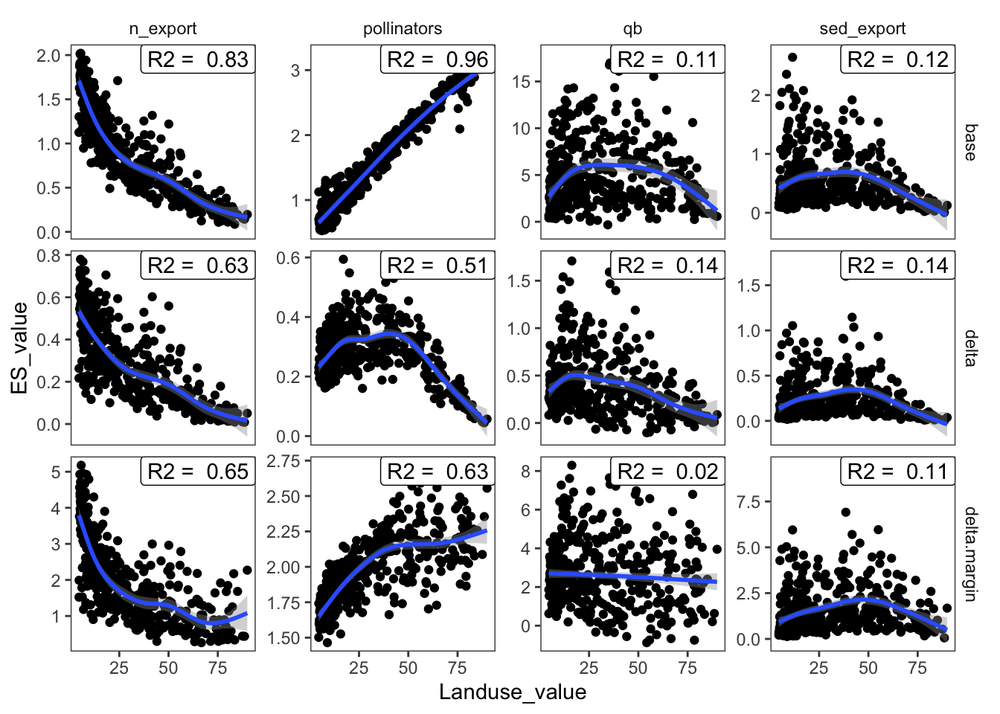
Pollinators:
Base
r2 = 0.98 OOB MSE = 0.01
Margin
r2 = 0.792 OOB MSE = 0.012
Nitrogen export:
Base
r2 = 0.876 OOB MSE = 0.03
Margin
r2 = 0.787 OOB MSE = 0.271
Sediment export:
Base
r2 = 0.511 OOB MSE = 0.11
Margin
r2 = 0.508 OOB MSE = 0.779
Baseflow:
Base
r2 = 0.463 OOB MSE = 6.939
Margin
r2 = 0.375 OOB MSE = 1.824
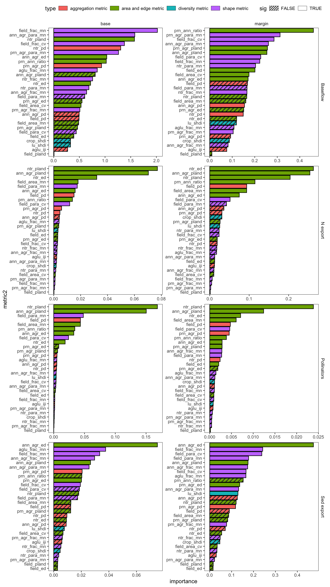
Significant metrics count
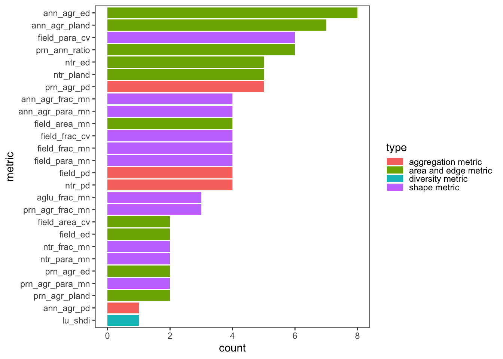
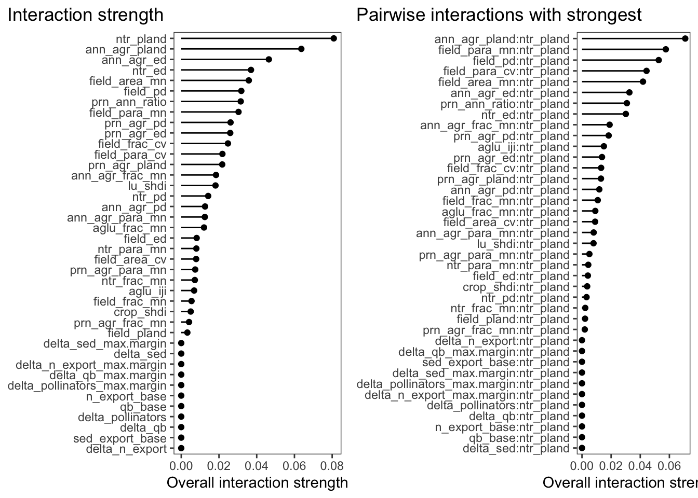
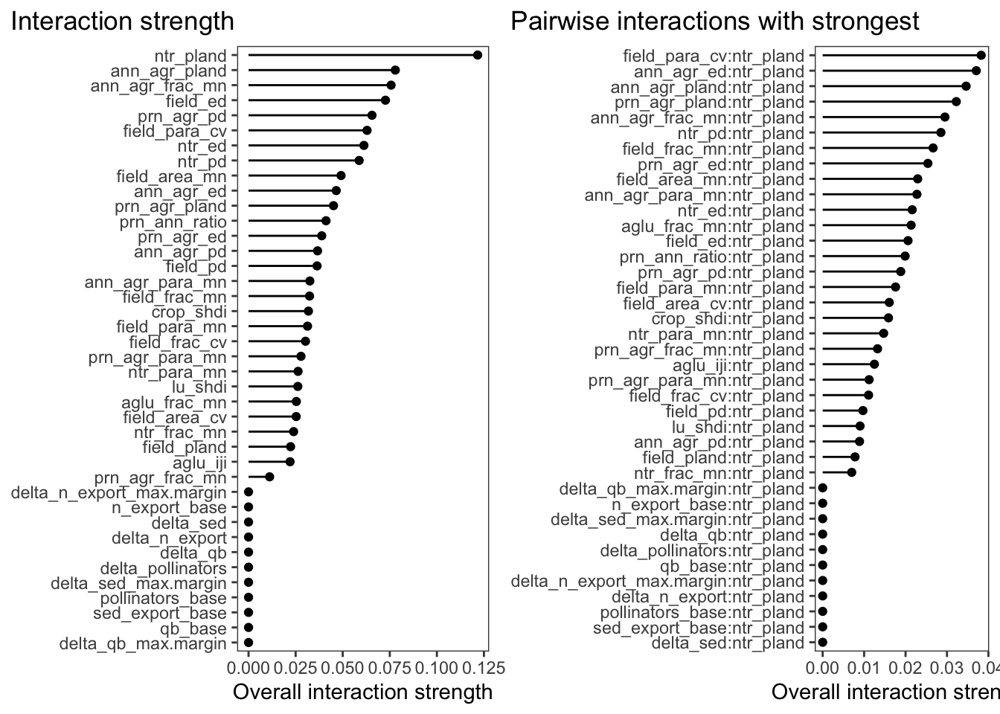
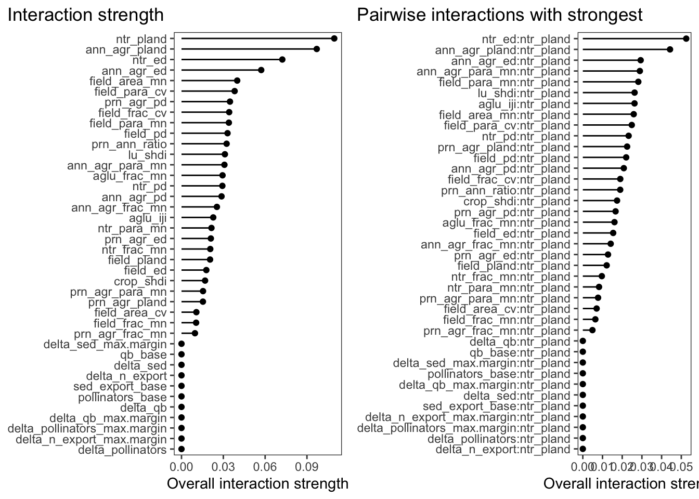
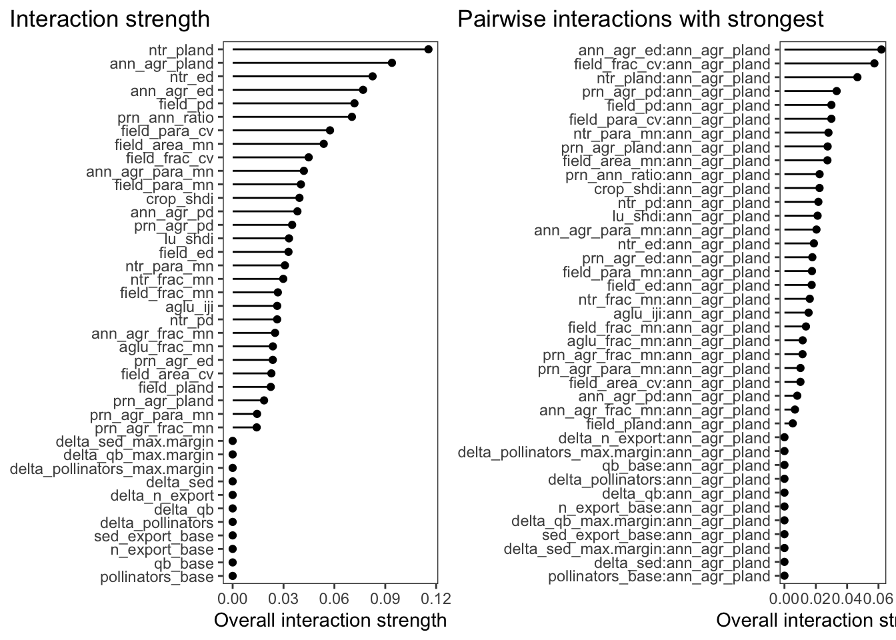
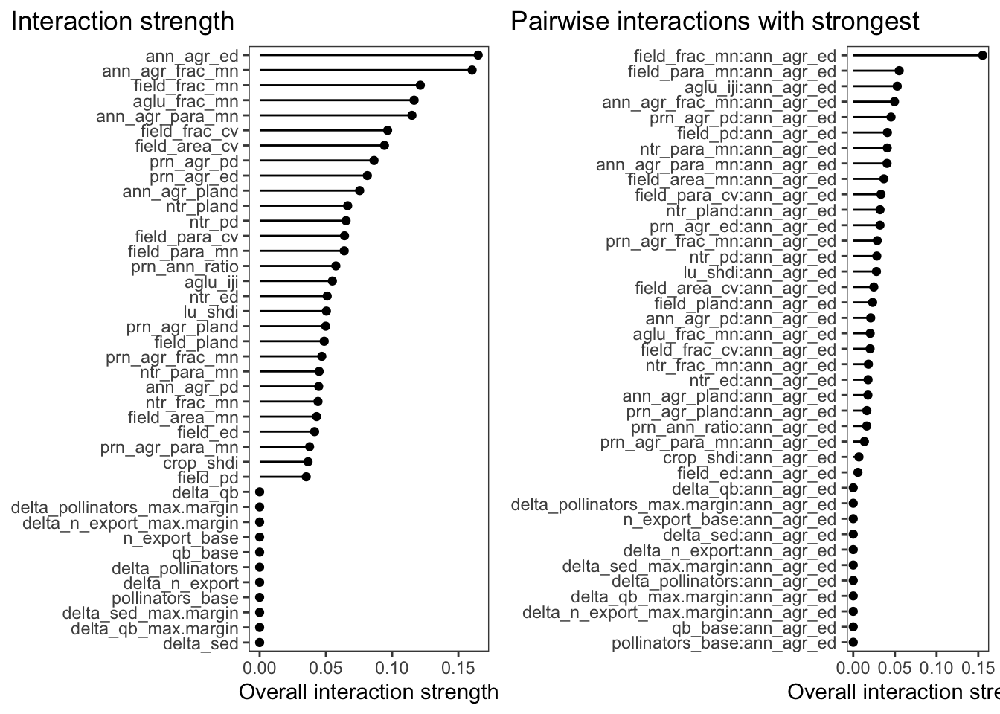
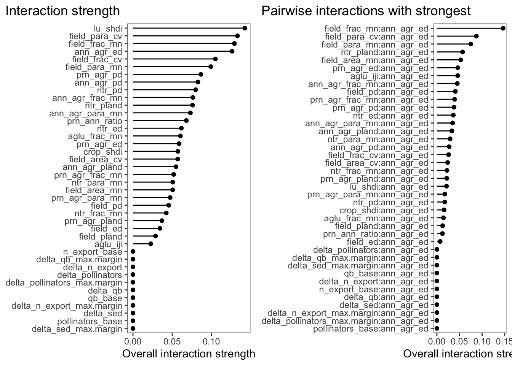
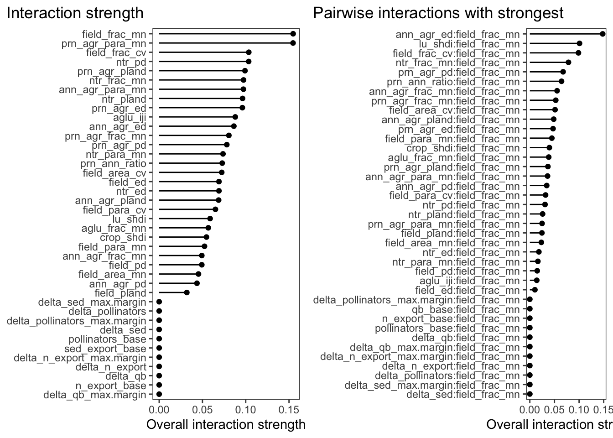
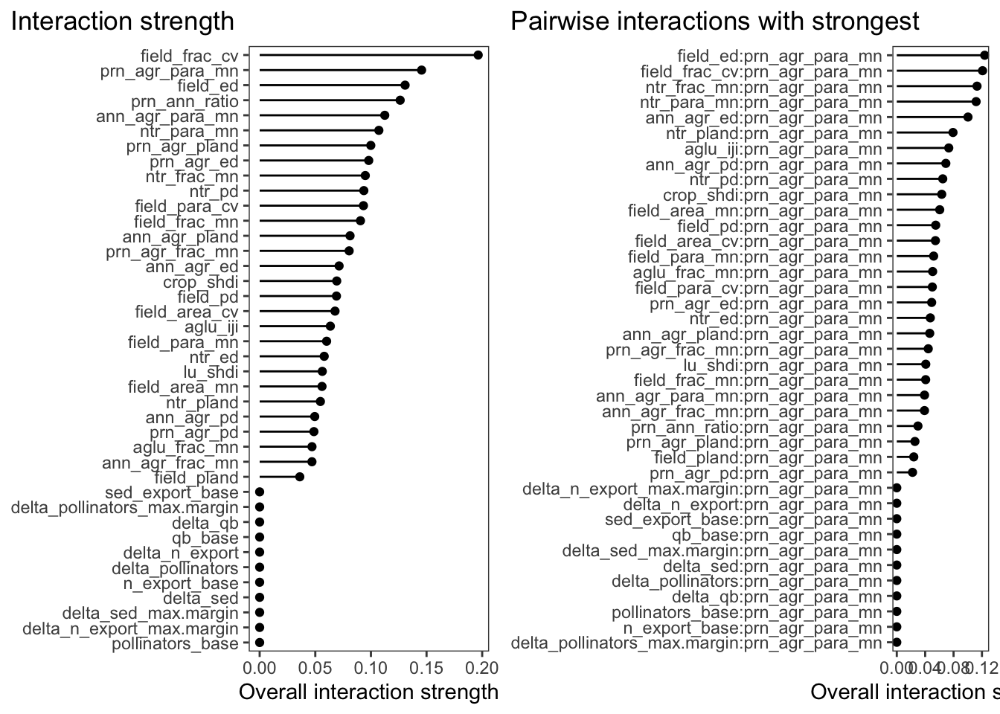